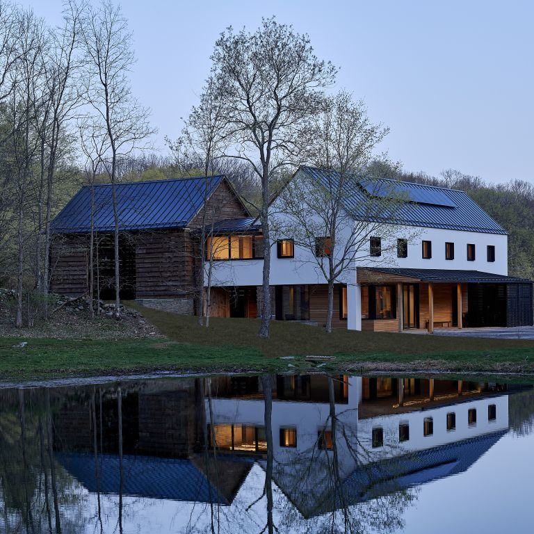

So... What is it?
Definition
Passive housing is designed to reduce heat transfer, in order to reduce energy consumption from heating/cooling. That's where "passive," comes in; it regulates temperature through passive means, rather than traditional air conditioning or heating. Passive building design can go beyond "housing," design principles can be used for commercial or public structures as well.

Technology
- Location
-
Taking advantage of the environment
- Sun
- Tree Shading
- Insulation
- Windows/Doors
- Ventilation
Benefits
- Lower energy costs for residents
- Increased indoor air quality (Ventilation, less mold)
- Resilience in power outages
- Reduced maintenance footprints for the developers
Quick History

Passive house is a fairly new design paradigm.
- First passive houses: Germany, 1990s
- At the beginning, mostly single-family homes (easier to prototype)
Considerations in the General Housing Design Process
Refurbishing
It is possible to remodel or renovate a traditional home to have passive features.
Integration with Other Technology
- Solar energy
- 3D printed concrete buildings
- Green roofs
Density
Housing Costs and Property Value
Resale value is also expected to be higher than for traditional homes.
PHIUS
- Phius = Passive House Institute, US
- Sets standards and certifications:
- PHIUS CORE
- PHIUS ZERO
- PHIUS+